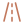

Reserva confirmada
Ref. #MS-2026-084
Ruta talayótica al atardecer
- Fecha y hora: Jueves, 21 de mayo de 2026 · 18:00 h
-
 Duración: 3 horas
Duración: 3 horas
-
 Plazas reservadas: 2 adultos · Grupo de máx. 8 personas
Plazas reservadas: 2 adultos · Grupo de máx. 8 personas
- Guía asignada: Aina Pons · Arqueóloga e investigadora
- Importe abonado: 110 €
- Entradas al yacimiento incluidas
Punto de encuentro y acceso
- Ubicación: Entrada principal del Poblado de Torre d’en Galmés
-

Dirección: Carretera de Son Bou, km 2, Alaior
Aparcamiento gratuito junto al centro de recepción. Te recomendamos llegar 10 minutos antes.